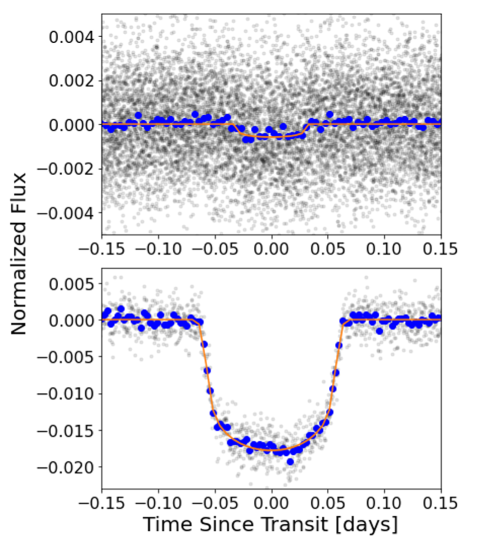
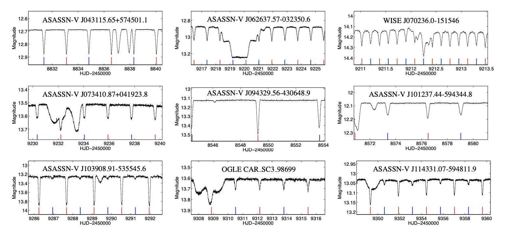
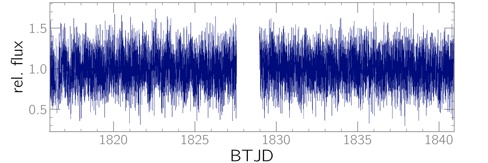

Welcome TESS followers! This week we are looking at three papers from the archive. Enjoy!
The Discovery of a Planetary Companion Interior to Hot Jupiter WASP-132 b (Hord et al., 2022) :
Hot Jupiters are predominantly lonely. At the time of writing, only three out of the ~500 confirmed transiting Hot Jupiters have known companions (WASP-47, Kepler-730 and TOI-1130). This paper presents the discovery and validation of WASP-132 c, a planetary companion interior to the orbit of the Hot Jupiter WASP-132 b. WASP-132 c has a radius of 12.0 R⊕, and an orbital period of 1.01 days. Hord et al. combined TESS photometry, ground-based archival and follow-up observations, and vetting and validation tools to rule out common false positives and confirm the planetary nature of the companion. Spectroscopic measurements from the CORALIE spectrograph place a 3 sigma upper limit of 37.35 M⊕ for the mass of WASP-132 c. Such systems provide deeper understanding of the connection between planet formation and the observed population. The authors of the paper suggest that the presence of WASP-132 c argues against a high-eccentricity migration scenario for the formation of the Hot Jupiter WASP-132 b. See Fig. 1 below and the paper for more details.
Multiply eclipsing candidates from the TESS satellite (Zasche, Henzl & Masek, 2022) :
Eclipsing binary stars represent ideal astrophysical laboratories to study basic stellar properties such as mass, radius, luminosity, etc. In turn, large-scale photometric surveys such as TESS provide unique opportunity to study eclipsing binaries in triple and higher-order stellar systems. A particularly interesting subset of such systems are quadruple stars with a 2+2 hierarchical configuration where each binary pair is eclipsing. Zasche et al. used TESS data to discover 25 triply-eclipsing triple stars and 116 doubly-eclipsing quadruple stars. Some of the targets exhibit eclipse-time variations indicating possible period changes and relatively short mutual orbital periods. The authors also suggest that V0871 Can is a potential septuple star with a (Aa+Ab)+B+C+D configuration. These systems bring important new insight into the formation mechanism of stars in multiple systems. They also enable ``real time'' studies of orbital evolution, Kozai-Lidov oscillations, precession and inclination changes, etc. See Fig. 2 below and the paper for more details.
Kepler K2 and TESS observations of two magnetic cataclysmic variables: The new asynchronous polar SDSS J084617.11+245344.1 and Paloma (Littlefield et. al., 2022) :
In this paper the authors present their analysis of two magnetic cataclysmic variable stars (CVs), SDSS J084617.11+245344.1 and Paloma. These are very-short period binary systems composed of a white dwarf and a main sequence star (usually M-dwarf) that interact with each other via accretion flows from the latter to the former. At the time of writing, there are only a handful of confirmed asynchronous polar magnetic CVs with continuous, long-duration photometric observations. TESS observed Paloma, a rare intermediate-asynchronous hybrid polar, in short-cadence during Sector 19, and helped confirm that the spin period is 2.27 hours, resolving a previous ambiguity between 2.27 hours and 2.43 hours. The TESS lightcurve is shown in Fig. 3 below. Based on the TESS data, Littlefield et al. argue that Paloma experiences either pole switching or a grazing eclipse of one of the emitting regions, and suggest that future observations are needed to discern between the two scenarios.

Fig. 1: Taken from Hord et. al., (2022). Phase-folded TESS data (gray) of WASP-132 showing planet c (upper panel) and panel b (lower panel), along with the corresponding best-fit transit model (red). The blue points represent the TESS data binned for clarity.

Fig. 2: Taken from Zasche al., (2022). TESS lightcurves of triply-eclipsing triple stars. The inner eclipsing binary is highlighted in blue (primary eclipses) and red (secondary eclipses). The complex eclipses additional eclipses are produced by the third star eclipsing or occulting the inner eclipsing binary.

Fig. 3: Taken from Littlefield et. al., (2022). Short-cadence TESS lightcurve of magnetic cataclysmic variable Paloma, observed in Sector 19.